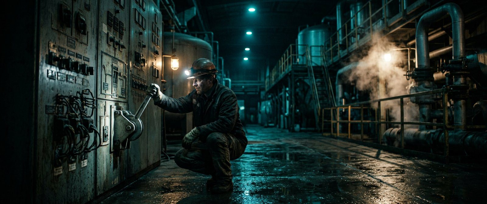
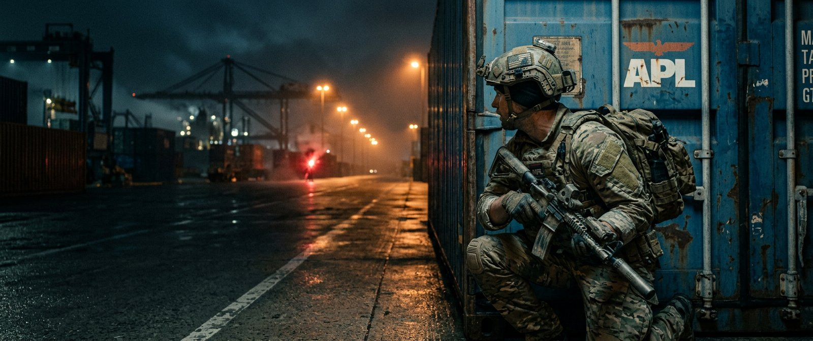

Sur la plupart des cartes, sortir demande quelque chose : un poids maximum, un paiement, un sac à retirer, un levier à actionner, un délai à attendre, ou un commutateur à trouver. Connaître ta sortie avant de remplir le sac change la fin du raid.
Relevés communautairesÀ confirmer en jeu
Le planificateur
Choisis une carte, puis décris ton état. Les lignes « fermées » t’indiquent ce qui manque, pas seulement que c’est impossible : un poids trop lourd se corrige, une liquidité absente ne se corrige plus.
Ces listes viennent de guides et de cartes interactives communautaires, pas d’un document officiel exhaustif. Une condition peut avoir changé sans annonce. Ce qui reste vrai, c’est la typologie : si tu retiens les six familles de contrainte, tu sauras improviser sur une carte que tu ne connais pas.
Les six familles de contrainte
Le poids. Une sortie refuse les joueurs au-dessus d’un seuil, souvent trente kilos. Sur ce type de sortie, le butin lourd est un piège : il faut choisir entre rapporter plus et pouvoir sortir.
Le sac. Certaines sorties exigent de retirer son sac à dos. Ce que tu portais reste au sol. Décide à l’avance ce que tu abandonnes, et retire-le avant la zone contestée.
Le paiement. Une sortie coûte de la liquidité, autour de dix mille Tekniq sur Zero Dam. Du butin n’aide pas : il faut des Tekniq disponibles, donc ne pas tout convertir en objets.
Le levier. Un levier actionné sur place ouvre la sortie. Le geste prend du temps et fait du bruit. Un levier activé en début de raid est une option ; le même geste au dernier moment, sous le feu, devient un piège.
Le délai. La sortie n’existe qu’après un certain temps de raid, et parfois avec une limite de joueurs. Arriver trop tôt ne sert à rien, arriver trop tard non plus.
L’aléatoire. Sur Space City, certains commutateurs changent de place d’un raid à l’autre. Repère-le tôt, même sans intention de partir : au moment où tu en auras besoin, il sera trop tard pour chercher.
Brakkesh, le cas extrême
Sur cette carte, presque rien ne s’ouvre sans condition. Un levier à usage unique aux bains, un levier près de la tour de Babel, une mission d’escorte, et une sortie qui n’apparaît qu’après un quart d’heure de raid pour trois joueurs au maximum. C’est cohérent avec la carte : c’est la plus rentable et la plus impitoyable quand on traîne.
Le guide des cartes, en une phrase chacune
Zero Dam : apprends à sortir avec un sac à moitié plein. Brakkesh : vérifie qu’une sortie proche est active avant d’entrer dans un intérieur à forte valeur. Space City : repère le commutateur actif tôt. Layali Grove : choisis ta rive d’arrivée avant de monter dans un bateau. AZ3 : l’entrée coûte cher, une extraction ratée coûte deux fois.

Actionner le levier en passant, pas au dernier moment : c’est la différence entre une option et un piège.
Trois vérifications avant d’ouvrir un conteneur : quelle sortie m’est ouverte maintenant, combien de temps il reste, et qu’est-ce qui est déjà dans mon coffre. Si tu ne sais pas répondre aux trois, tu n’ouvres pas le conteneur.
La carte pour apprendre : partir d’ici avec un sac à moitié plein plutôt que de remplir pour ne pas sortir.
Layali Grove 2.0
Sorties par l’eau et canot d’assaut
Le trajet devient rapide et blindé, mais le moteur s’entend de loin. Repérer la berge avant de la rejoindre.
Space City
Commutateurs aléatoires et élévateur à sens unique
Repérer la sortie active tôt. Improviser une sortie à la dernière minute y est la première cause de mort.
Brakkesh
Urbanisme dense, factions et chasses
Une mission de faction majeure peut te rendre chassable : la sortie se choisit avant de lancer le contrat.
AZ3
Radiation, secteurs étendus
Ne pas sur-looter. Une cache de valeur extraite vaut mieux que trois objectifs et une mort au dernier.
La règle commune à toutes les cartes tient en une phrase : sache par où tu repars avant de remplir le sac. Si la réponse suppose de traverser la moitié de la carte, l’itinéraire de butin est mauvais, même si le butin est bon.
Sortir en solo : ce que les joueurs réguliers font différemment
Les retours de joueurs solo qui extraient régulièrement se recoupent sur quatre points, et aucun ne concerne l’adresse au tir.
La sortie se choisit avant d’entrer
Un joueur qui sort à quatre-vingts pour cent court-circuite le problème autrement : il sait par quelle porte il repart et il adapte son itinéraire de fouille à cette porte. Le reste, c’est de la décoration.Fil communautaire, opérations solo
Les trois premières minutes valent le reste
Les témoignages convergent : l’essentiel de l’argent se fait dans les premières minutes du raid, sur un itinéraire connu, avec une sortie en quatre à sept minutes. Rester vingt-cinq minutes sur place multiplie les rencontres sans multiplier le butin.Fil communautaire, opérations solo
Les points de sortie sans sac
Plusieurs cartes offrent des sorties réservées aux joueurs sans sac à dos, avec un nombre de places limité affiché avant l’entrée. Le compromis est clair : on abandonne la capacité de transport contre une file d’attente presque vide. Un gilet porte-chargeurs très large remplace alors le sac.Fil communautaire, sorties sans sac
Le dernier quart d’heure est un piège
À la fin du raid, les routes qui mènent aux sorties se remplissent. Un joueur qui arrive trop tôt attend au milieu du trafic ; un joueur qui arrive dans les dix dernières secondes, fumigènes en main, traverse pendant que les autres se disputent la place.Fil communautaire, opérations solo
Un dernier point revient dans presque tous les échanges, y compris ceux qui parlent d’argent : l’armure coûteuse n’est pas le levier. Plusieurs joueurs rapportent de meilleurs résultats avec une protection bon marché et des munitions de bon niveau, parce que la balle décide du duel et que la plaque ne fait que retarder l’échéance. C’est un choix économique avant d’être un choix tactique.

Le trajet de retour se repère depuis l’abri, pas depuis la sortie. Une fusée allumée au loin indique où les autres joueurs regardent.Une sortie par l’eau se prépare depuis la berge, pas depuis le bateau.La sortie la plus rapide est souvent la plus visible : un hélicoptère ne débarque jamais discret.